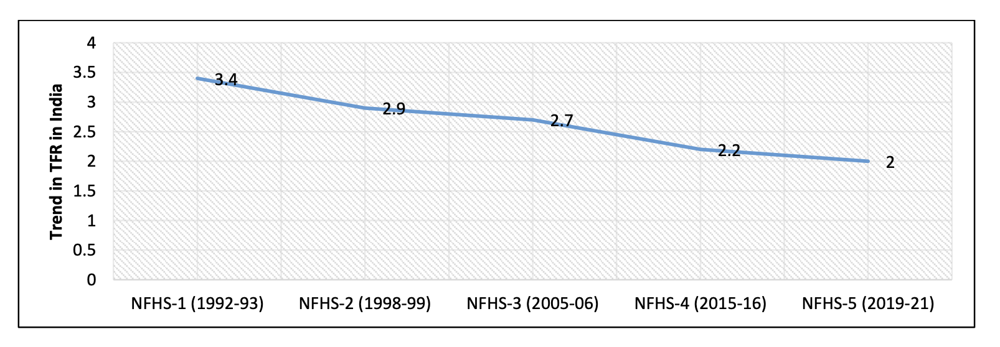

MPP-MPA Dual Degree Student | LinkedIn | GitHub
PP434 — Automated Data Visualization | Data Science Portfolio
This website is organised into different sections, with each section corresponding to the challenge for the respective week.
My visualisations for Challenge 2.
This chart uses Robert Shiller's historical stock market data to visualise the US price-to-earnings ratio over time. It was created using Python's Altair library.
India's adolescent fertility rate is comparatively low, raising questions about whether existing programmes should be maintained or resources redirected.
India's adolescent fertility rate has declined dramatically since 1960, but progress has slowed since 2016, raising questions about sustaining further reductions.
India's 2024 rate is substantially below Bangladesh's and Nepal's, raising questions about whether additional funding should target other priorities.
The original chart from the Population Foundation of India, showing India's total fertility rate across the five National Family Health Surveys.

A recreation of the original in Vega-Lite, keeping its axis title, survey labels and evenly spaced categories.
I added a clearer headline, explanatory subtitle, source, proportional survey spacing and data labels to improve accuracy, context and readability.
A live chart of youth unemployment in India, pulled directly from the World Bank Indicators API. The chart updates automatically whenever the World Bank publishes new data.
Base URL: https://api.worldbank.org/v2/ (version 2 of the World Bank Indicators API). No API key is needed, and the API allows browser requests (CORS), so the chart can call it directly.
Elements needed to call the data:
country/IND: the country, as a 3-letter codeindicator/SL.UEM.1524.ZS: the indicator code, here youth
unemployment (% of labour force aged 15-24, modelled ILO estimate)
?format=json: returns JSON instead of the default XML
&date=1991:2025: the year range; the colon means
"from... to"
&per_page=100: returns all rows on one page; the
default is 50
Data returned: JSON, as a list with two parts: page
metadata first, then the data. The chart uses
"property": "[1]" to select the data. The data is largely
tidy, with one row per country per year, but not fully clean:
country and indicator are nested objects,
years are stored as text, some columns are empty, and years without data
return null.
A dashboard examining regional devolution in the UK.
Exploring regional data through geographic visualisations.